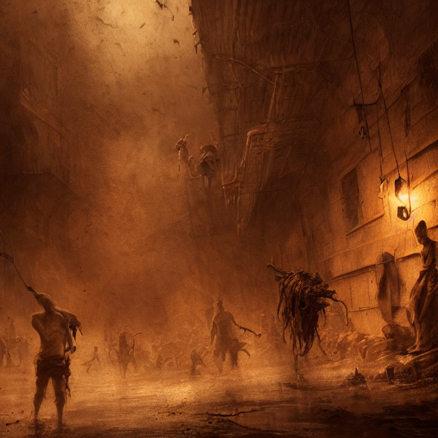

In this post I'll report experiments with Stable diffusion, a machine learning algorithm that allows you to create images from text.
You can also visit the
Sentient AI collection
and the
First test collection .
Key phrase: "realistic_detailed_photo_rendered_in_octane_3d__of_nahuales_in_a_huge_abandoned_old_haunted_house_by_Francis_Bacon"Key phrase: "stunning_eerie_hell_with_people_suffering_hyperrealism_photorealistic_art_digital_arts_intricate_details_and_composition_surreal_colors"Key phrase: "a_landscape_of_hell_with_people_suffering_and_ghost_a_fantasy_digital_painting_by_greg_rutkowski"

Key phrase: "action_scene_sepia_painting_of_hell_with_people_suffering_atmospheric_lighting_brooding_painted_intricate_ultra_detailed_well"Key phrase: "epic_professional_digital_art_of_hell_with_people_suffering_atmospheric_lighting_painted_complex_detailed_sinister_background"Key phrase: "epic_professional_digital_art_of_hell_with_people_suffering_atmospheric_lighting_painted_complex_detailed_sinister_background"Key phrase: "extreme_long_shot_of_a_hell_with_people_suffering_monsters_in_full_combat_all_stand_at_attention_beneath_the_death_presiding_over_them_8_k_unreal"Key phrase: "hell_with_people_suffering_by_lisa_frank_and_beksinski_and_wayne_barlowe"Key phrase: "hell_with_people_suffering_by_lisa_frank_and_beksinski_and_wayne_barlowe_8_k_hires"Key phrase: "hyper_realistic_portrait_photo_of_hell_with_people_suffering_portrait_shot_intricate_detail_glittering_sun_rays"Key phrase: "realistic_detailed_photo_rendered_in_octane_3_d_of_hell_by_francis_bacon_by_ayami_kojima_amano_karol_bak_greg_hildebran"